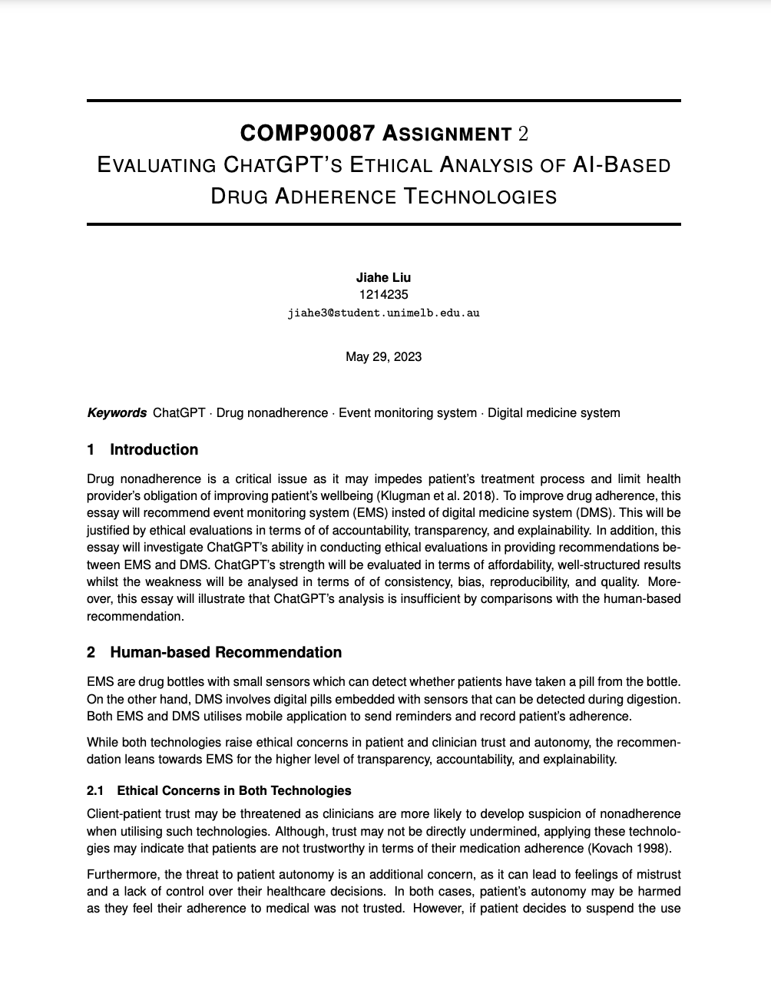
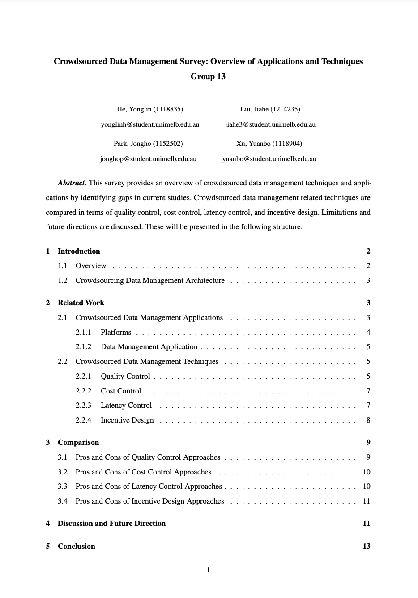

My Research
AI Application in Health | Public Health | AI Ethics | Crowdsourced Database | Deep Learning
Current Project: Air Quality & Health @ Monash
Public Health
Environment
Statistical Anslysis
Manuscripting
STATA
Python
Geopandas
Git
Word
A longitudinal study focusing on the impact of air pollutants on human health, encompassing literature review,
statistical analysis, and manuscript preparation.
Current Project: AI Application in Health Data
Clinical Data
AI & Health
Statistical Anslysis
Machine Learning
MIMIC-IV
Python
SQL
A retrospective study developing binary machine learning model to predict the mortality rate of stage II hypertension cohort using MIMIC-IV data.

Ethical Analysis on ChatGPT
AI Ethics
LLM
Literature Review
Manuscripting
ChatGPT
Latex
Evaluating ChatGPT's ethical analysis of AI-based drug adherence technologies.

Crowdsourced Data Management Survey: Overview of Applications and Techniques
Crowdsourced Data
Database System
Literature Review
Survey
AmazonTurk
Latex
Reviewed the on-going development, application, and techniques in crowdsourced data management